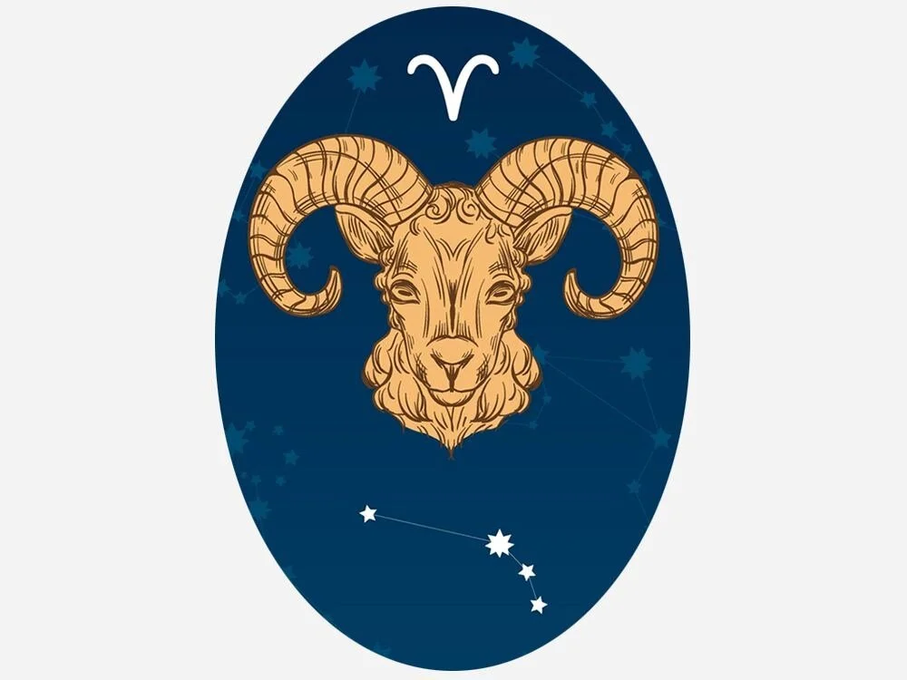

Burçlara göre Doğal taşlar

Koç
Koç burcu doğum tarihleri: 21 Mart – 20 Nisan
- Koç, Zodyak’taki ilk astrolojik burçtur.
- Koç burcu için burç elementi Ateştir.
- Koç burcu, Mars Gezegeni tarafından yönetilir.
Koç burcu ile uyumlu doğum taşları:
Mart ayı: Akuamarin, Kan Taşı (Blood stone) Nisan ayı: Elmas, Kristal KuvarsKoç burcu ile uyumlu burç taşları:
- Anyolit taşı, (Yakutlu Zoisit)
- Akuamarin
- Aventurin
- Kan Taşı (Blood stone)
- Jasper
- Kaplan Gözü
- Sitrin
- Kristal Kuvars
- Elmas
- Zümrüt
- Granat – Lal taşı
- Hematit
- Yeşim
- Oniks
- Yakut
Boğa
Boğa burcu doğum tarihleri: 21 Nisan – 21 Mayıs- Boğa, Zodyak’taki ikinci astrolojik burçtur.
- Boğa burcu için burç elementi Dünya’dır.
- Boğa, Venüs gezegeni tarafından yönetilir.
Boğa burcu ile uyumlu doğum taşları:
Nisan ayı: Elmas, Kristal Kuvars Mayıs ayı: Zümrüt, KrisoprazBoğa burcu ile uyumlu burç taşları:
- Carnelian – Karnelyan
- Kedi Gözü
- Krizokol,
- Kristal Kuvars
- Mercan
- Elmas
- Zümrüt
- Krisopraz
- Yeşim
- Lapis Lazuli
- Lav Taşı
- Rodonit
- Pembe Kuvars
- Rutil Kuvars
- Selenit
- Mavi Turmalin
İkizler
İkizler burcu doğum tarihleri 22 Mayıs – 21 Haziran- İkizler, Zodyak’taki üçüncü astrolojik burçtur.
- İkizler burcu için burç elementi havadır.
- İkizler, Merkür gezegeni tarafından yönetilir.
İkizler burcu ile uyumlu doğum taşları:
Mayıs ayı: Zümrüt, Krisopraz Haziran ayı: Aytaşı, Alexandriteİkizler burcu ile uyumlu burç taşları:
- Akik
- Alexandrite
- Aytaşı
- Apatit
- Akuamarin
- Krizopraz
- Sitrin
- Kristal Kuvars
- Zümrüt
- Yeşim
- Jasper
- Oniks
- İnci
- Peridot
- Rutil Kuvars
- Mavi Safir
- Yeşil Safir
Yengeç
Yengeç burcu doğum tarihleri: 22 Haziran – 23 Temmuz- Yengeç, Zodyak’taki dördüncü astrolojik burçtur.
- Yengeç, burcu için burç elementi sudur.
- Yengeç, Ay tarafından yönetilmektedir.
Yengeç burcu ile uyumlu doğum taşları:
Haziran ayı: İnci, Aytaşı, Alexandrite Temmuz ayı: Yakut, KarnelyanYengeç burcu ile uyumlu burç taşları:
- Aventurin
- Alexandrite
- Kalsit
- Carnelian
- Kalsedon
- Karnelyan
- Kristal Kuvars
- Lal Taşı
- Aytaşı
- Opal
- İnci
- Yakut
Aslan
Aslan burcu doğum tarihleri: 24 Temmuz – 23 Ağustos- Aslan, Zodyak’taki beşinci astrolojik burçtur.
- Aslan burcu için burç element ateştir.
- Aslan, Güneş tarafından yönetilir.
Aslan burcu ile uyumlu doğum taşları:
Temmuz Doğum Taşları: Yakut, Karnelyan Ağustos Doğum Taşları: Peridot, OniksAslan burcu ile uyumlu burç taşları:
- Kehribar (Amber)
- Aventurin
- Bronzit
- Karnelyan
- Sitrin
- Kristal Kuvars
- Elmas
- Jasper
- Labradorit
- Oniks
- Rodokrosit
- Yakut
- Kaplan gözü
- Topaz
Başak
Başak burcu doğum tarihleri: 24 Ağustos – 23 Eylül- Başak, Zodyak’taki altıncı astrolojik burçtur.
- Başak burcu için burç elementi Dünya’dır.
- Başak, Merkür gezegeni tarafından yönetilir.
Başak burcu ile uyumlu doğum taşları:
Ağustos ayı: Peridot, Oniks Eylül ayı: Mavi Safir, Lapis LazuliBaşak burcu ile uyumlu burç taşları:
- Akik
- Almandin
- Amazonit
- Ametist
- Karneliyen
- Kalsedon
- Kristal Kuvars
- Jasper
- Lapis Lazuli
- Magnetit
- Peridot
- Safir
- Obsidiyen
- Turmalin
- Oniks
Terazi
Terazi burcu doğum tarihleri: 24 Eylül – 23 Ekim- Terazi, Zodyak’taki yedinci astrolojik burçtur.
- Terazi burcu için burç elementi havadır.
- Terazi, Venüs gezegeni tarafından yönetilir.
Terazi burcu ile uyumlu doğum taşları:
Eylül ayı: Mavi Safir, Lapis Lazuli Ekim ayı: Opal, Pembe TurmalinTerazi burcu ile uyumlu burç taşları:
- Ametrin
- Kan Taşı
- Akik
- Krizopraz
- Sitrin
- Kristal Kuvars
- Zümrüt
- Yeşim
- Lapis Lazuli
- Lepidolit
- Malakit
- Aytaşı
- Opal
- Pembe Kuvars
- Safir
- Turmalin
Akrep
Akrep burcu doğum tarihleri: 24 Ekim – 22 Kasım- Akrep, Zodyak’taki sekizinci astrolojik burçtur.
- Akrep burcu için burç elementi sudur.
- Geleneksel olarak Akrep, Mars gezegeni tarafından yönetiliyordu, ancak Plüton’un keşfinden sonra burcun modern hükümdarı Plüton olarak kabul edildi.
Akrep burcu ile uyumlu doğum taşları:
A Ekim ayı: Opal, Pembe Turmalin Kasım ayı: Sarı Topaz, SitrinAkrep burcu ile uyumlu burç taşları:
- Almandin
- Akuamarin
- Akik
- Opal
- Jasper
- Kristal Kuvars
- Labradorit
- Malakit
- Aytaşı
- Obsidiyen
- Peridot
- Rodokrozit
- Yakut
- Dumanlı Kuvars
- Topaz
- Turkuaz
- Turmalin
- Sitrin
Yay
Yay burcu doğum tarihleri: 23 Kasım – 21 Aralık- Yay, Okçu, Zodyak’taki dokuzuncu astrolojik burçtur.
- Yay burcu için burç element ateştir.
- Yay, Jüpiter gezegeni tarafından yönetilir.
Yay burcu ile uyumlu doğum taşları:
Kasım ayı:Sarı Topaz, Sitrin Aralık ayı:Turkuaz, Mavi TopazYay burcu ile uyumlu burç taşları:
- Ametist
- Kalsedon
- Kristal Kuvars
- Labradorit
- Lapis Lazuli
- Obsidiyen
- Peridot
- Yakut
- Safir
- Sitrin
- Dumanlı Kuvars
- Sodalit
- Topaz
- Turkuaz
- Turmalin
Oğlak
Oğlak burcu doğum tarihleri: 22 Aralık – 20 Ocak- Oğlak, Zodyak’taki onuncu astrolojik burçtur.
- Oğlak burcu için burç elementi Dünya’dır.
- Oğlak burcu, Satürn gezegeni tarafından yönetilir.
Oğlak burcu ile uyumlu doğum taşları:
Aralık ayı:Turkuaz, Mavi Topaz Ocak ayı: Lal TaşıOğlak burcu ile uyumlu burç taşları:
- Akik
- Ametist
- Aragonit
- Kedi Gözü
- Kristal Kuvars
- Florit
- Jasper
- Manyetit
- Malakit
- Dumanlı Kuvars
- Kaplan Gözü
- Siyah Turmalin
- Yeşil Turmalin
- Mercan
- Lal
- Turkuaz
- Topaz
Kova
Kova burcu doğum tarihleri: 21 Ocak – 19 Şubat- Kova, Zodyak’taki on birinci astrolojik burçtur.
- Kova burcu için burç elementi havadır.
- Geleneksel olarak Kova burcu Satürn gezegeni tarafından yönetiliyordu, ancak Uranüs keşfedildikten sonra yönetici gezegeni değişti. Bazı kaynaklara göre Kova burcunun iki yönetici gezegeni vardır.
Kova burcu ile uyumlu doğum taşları:
Ocak ayı: Lal Taşı Şubat ayı: AmetistKova burcu ile uyumlu burç taşları:
- Kehribar
- Ametist
- Angelit
- Akuamarin
- Kalsedon
- Kristal Kuvars
- Florit
- Lal taşı
- Hematit
- Turkuaz
- Safir
- Akik
Balık
Balık burcu doğum tarihleri: 20 Şubat – 20 Mart- Balık, Zodyak’taki on ikinci astrolojik burçtur.
- Balık burcunun burç elementi sudur.
- Geleneksel olarak Balık, Jüpiter gezegeni tarafından yönetiliyordu, ancak Neptün’ün keşfedildikten sonra yönetici gezegeni değişti. Bazı kaynaklara göre Kova burcunun iki yönetici gezegeni vardır.
Balık burcu ile uyumlu doğum taşları:
Şubat ayı: Ametist Mart ayı: Akuamarin, Kan Taşı (Blood stone)Balık burcu ile uyumlu burç taşları:
- Ametist
- Akuamarin
- Kan Taşı
- Mavi Akik
- Kristal Kuvars
- Mercan
- Florit
- Opal
- Turkuaz
- Kalsit
- İnci
- Turmalin